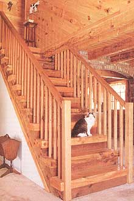
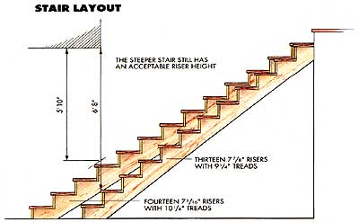
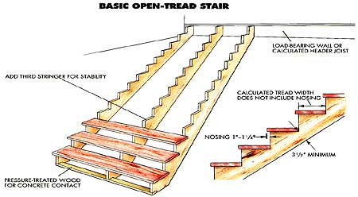
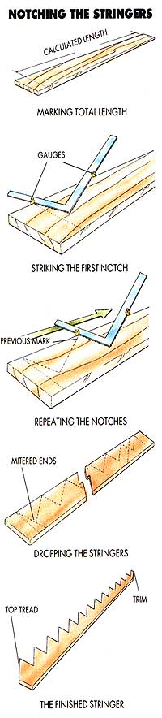
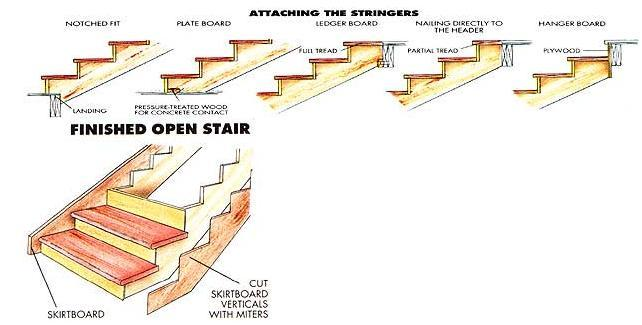

Stair Building Step By Step
July/August 1989
by Richard Freudenberger
Tread lightly if you don't use geometry, patience or basic carpentry skills. By Richard Freudenberger
MAKE A POINT SOMETIME to study the stairs in your home. Inthe light of scrutiny, that one piece of construction can change from a taken-for-granted utility to a display of planning and execution that's as close to perfect as you're likely to see under a family roof.
Think of all the elements that could've gone askew: An angle too steep or too shallow, a beam placed just where your pate passes daily, steps that are short, narrow or pitched one way or the other-any of these would make a quick run upstairs seem like a dash through an obstacle course.
Fortunately, others have gone before us and charted the way. And stairs in the great majority of houses don't require the skills of a master builder but rather an appreciation of planning. Once that's established, a circular saw and a few hand tools can work wonders for the careful soul seeking a simple stair to another story.
Some Garden Varieties
An open stairway is just what it implies: It's exposed on one or both sides and uses a balustrade if there are more than two or three steps. Closed stairways are flanked by full or knee walls and use handrails rather than the post-and-banister railing of the open style. Stairs with no backboards, or risers, are called open tread stairways and may or may not be exposed.
For a stair builder, there are further distinctions based on how the treads and risers are fastened to the stair carriages, or stringers.
But the most manageable design uses a cutout, or notched, stringer. The seats for the treads are cut directly into the 2 X 12 carriage planks, making an exaggerated sawtooth pattern in the upper edge. The assembly can be exposed, as in a basement stair, or dressed up with skirtboards -side trim that is fitted to the treads and risers to give a finished look to the structure beneath. It's a good stair for the first-time builder to tackle.
The Flight Plan
The few rules that exist in stair building are based upon a combination of common sense and code compliance. For example, main stairways usually must be 36" wide from wall to wall, but a 42" width is more comfortable. Likewise, minimum headroom-the distance from the nose of the tread to any overhead member-is established at 80", but many house stairs are more generous by 6" or so-and basement steps are shy that by a couple of inches.
The open side of any stairway higher than 30" should have a railing fixed at 30" to 34" above the tread nosing; closed stairways require a handrail on one side (or both, if the steps are wider than 44").
Carriage stringers are nearly always made from 2 X 12s, since their depth allows for the minimum 3 1/2" of wood between the plank's lower edge and the cuts. Stairs with two-by or thicker treads-deck steps or rustic interior designs-have stringers spaced 3' apart. A finished stair with thinner tread stock needs a stringer every 30". Of course, a center member can be added to any stairway to improve stability.
Since we're creatures of habit, we tend to develop certain expectations, and one of them is that a flight of stairs will feel "right" underfoot. Building codes set guidelines: a tread width no less than 9" and a riser height no more than 8'/a". Within those limits, there's enough flexibility to work up a stairway that's comfortable-in both step and angle-and which will fit in any reasonable space between floor levels.
One well-known method of arriving at the best tread and riser combination is to add the two together: The total should equal 17 1/2", give or take a fraction. So, a 71/4" riser and a 10 1/4" tread is just about right. (The 1" to 1 1/4" nosing isn't included in the calculations.) The angle of incline is a little more subjective, though somewhere between 32° and 37° is considered ideal-slightly more than exterior stairs, but not as steep as the 50° stairways in some older homes.
Meeting the headroom requirements demands a sharp eye toward several points mentioned earlier. Increasing the risers (and narrowing the tread, front to back) will do the trick, but you'll pay the price in a steeper stairway.
Enlarging the stair opening at the top may be a better choice; a 3' X 10' framed well can be lengthened a bit to gain "altitude" over those lower steps. Framing most stair openings amounts to simply doubling the headers and trimmer (side) joists-but stair wells built away from load-bearing walls need support from below unless the overhead joists are properly designed.
Go Figure
Now you can get down to cases. After you've established the height between finished floors and checked for levelness of the upper and lower surfaces, grab a calculator, and prepare to plug in some trial numbers. Let's say you have a 7 1/2' ceiling, and your working height is 102". Divide that by 15, a common number of risers for a house stair. The result-6.8" per riser-is a bit low; reducing the plan by one riser, to 14, will give you a riser height of 7.28", just about perfect. Then, using the old 17 1/2" rule of thumb referred to earlier, subtract 7.28 from 17.5 to get the width of each tread: 10.22, or comfortably close to 10 1/4".
Next, you'll be calculating the total run-the horizontal length of the stairway from bottom riser to top, where the header will form the last riser. (This isn't true of a stair that ends in a full or partial tread, but that doesn't affect the formula, since that surface is still part of the carriage.) Mind you, this is not the diagonal measurement, but the length of space that will ultimately be taken up on the floor below.
To get that figure, multiply the number of treads (13) by each one's width (10.22") to arrive at 132.86", or just a saw blade's width over 11' . But how did we know the number of treads? Easy: There's always one less tread than there are risers in any stair, simply because the floor surfaces serve as treads without being part of the stairway.
Armed with this information, you can quickly determine whether your flight plan will fit in the space intended. If you're shy of room at the foot of the stairs, it's not the end of the world. Narrow the treads a bit, or remove one tread and riser, and live with a steeper stair.
Finally, you'll need to calculate the length of the stringers. They're really just the third leg of a triangle, so simple geometry (a 2 + b 2 = c 2 ) will give you that figure-167.5". However, because to mark accurately you'll need to know where the "missing" floor tread would end, you'll have to add the width of a tread to get a working figure, 177.72". That's 14' 9 3/4'; so 16' planks would allow plenty of room for trimming and for planning around knotholes.
Square the Corners
At this point, the theory becomes fact. You're ready to transfer the numbers to the stringer planks and make the cuts that will establish your stairs. To do it right, you'll need a 16' wide-blade tape measure, and a 2' framing square with screw-on stair gauges-small knobs that fix to the edge of the tool.
First, mark the edge of one stringer to the length you calculated. Then pinpoint the tread width and the riser height on your square, and clamp the stair gauges to the outside of the square blades at those points.
Starting at one end of the stringer, hold the gauges against the edge of the board, and strike the tread and riser cut lines along the blade edges, beginning each successive combination at the end of the previous one. Don't make the mistake of reversing your dimensions, or you'll end up with narrow treads that are pitched forward drastically.
Before doing any cutting, you'll have to take into account the thickness of the tread material and its relation to that of the finish flooring. This process, known as "dropping the stringers," insures that all the finished riser heights will be the same when the stair's installed, and amounts to nothing more than trimming the base of the stringer boards.
An easy way to calculate that cut is to subtract the thickness of the finish floor material from the actual tread thickness. The result is the amount you'll need to trim from the bottom. If the stairway rests on a finished slab, that dimension will equal the thickness of a tread.
Use a circular saw to make the end cuts and nearly the full length of each tread and riser cut. You'll have to use a handsaw to complete the inside corners because the curvature of the circular blade doesn't produce a square cut. If you're unsure of your arithmetic, you can always complete just the base and header cuts, then fit the stringer temporarily into position to check things. Done correctly, the stringer will meet the floor and header flush at both ends, and all the tread lines will be level. Once that's the case, use the finished cutout stringer as a template for any others you'll be making.
Step It Up and Go
The stair carriages must be fastened securely at the top and bottom, both for safety and to minimize the creaking that will tend to develop over the years. At the top of the stairs, it's easy to let the header be the first riser. In this case, the carriage can be secured to a full-length hanger board equal to the depth of the stringer and the height of the riser. The board is then nailed to the header. Preformed steel hangers can also be used.
If a full or partial tread meets the finished floor, the stringers can be nailed right to the header; an even better setup is to notch the lower corners at the top of the carriage and install a stair-width 2 X 4 ledger to help support the assembly from below.
Attaching the base is even easier. It can be nailed directly to the subfloor or cut to fit against a landing frame, then secured. On a slab or wooden floor, a pressure-treated 2 X 4 plate bolted or nailed to the surface and set behind the bottom riser can serve as a stop, much like the ledger board above.
Before actually nailing the stringers in place, you'll need to decide if the carriages will remain exposed or be trimmed with a skirting. Structurally, there's little difference, but in a finished stair one or both of the outside stringers may be set in 3" or more. The newel post can then be fastened to the stringer, and the lowest tread and its adjacent skirt cut to fit around the post so it's flush with the skirtboards.
Of course, you may want the post at the end or the outside of the staircase; if that's so, the stringer can be shifted outward.
Installing the treads and risers can range from a cut-and-nail assembly job to a tedious fitting process. In the simplest case, an exposed stairway has 1 X 8 risers ripped to the appropriate width and cut to meet the outside edges of the carriage. The treads are cut to leave the 1" or so nosing at the front when the backs are butted against the already-installed risers, and a slight overhang is included at the sides.
Far more labor-intensive is a stair built against a wall, buf finished with skirt trim. Here, before the stringers are placed, a 1 X 10 skirtboard is nailed to the wall, parallel with the line of the tread nosing. The open skirtboard is cut out in the pattern of a stringer, with the exception that the vertical edges which meet the risers must extend far enough forward to accept a 45° miter (a table or radial-arm saw would help here). The skirt is then finish-nailed to the outside stringer on 1 X 4 blocking.
Each tread and riser is cut to the right width as before. Then the risers are mitered to match the skirting, and the opposite ends individually cut and fastened as you work your way up the stair. The treads are cut to overhang the open side, to match the nosing. Each square edge can then be rounded with a rasp and sander, or the front corner can be mitered and the edge trimmed to accept a piece of rounded nosing trim. A molding is usually used beneath the tread to cover the joints where the riser and skirt meet it.
Use 8d finishing nails to secure both the treads and risers to the stringers (screws can also be used, especially if the tread material is thick). If you have hardwood treads, predrill the holes before sinking the nails. It's important, too, to make sure the inside joint between tread and riser stays intact; a few 2" nails placed into the tread's back edge will discourage any separation.
To finish the stairway, you'll need to add the balusters and handrails. It used to be common for the balusters, or spindles, to be dovetail-joined to the overhang at the side of each step. Today, they're usually fitted to sockets in the handrail and tread (or nailed or screwed, two to a tread, at the bottom).
Premanufactured railings and fastening hardware are often used because of the work involved in shaping those finish parts; they're popular enough that almost any size and style is common stock. If you make your own, be certain to fasten the handrail securely with long No. 12 wood screws to the newel post and a structural wall member above.
Stair building is still one of the skills that's by and large left to the experts. But with a good foundation in the basics, you'll be able to tackle small, outdoor-deck stairways, and to better plan those in a contracted house-building project. And, who knows, once you have a little experience under your belt, you might be ready for the next step!
|
 During the planning stages, a chart such as this is invaluable for understanding how stair angle affects tread width and riser height as well as the placement of handrails. |
 Available headroom and the horizontal run of the stair depend on its angle. Removing just one riser and tread combination, shown at left, yields nearly one foot of additional overhead room and more than two treads' worth of floor space. |
 Below: Laying out a notched stringer requires the use of a square with screw- on stair gauges. It's critical that all measurements be accurate before spiking cut lines. Right: The simplest open-tread stairs are usually used in basements and utility rooms or on outdoor decks. |
|
 Left: An open stair can be given a more finished appearance by adding skirt board trim to the sides. The risers are mitered to the trim's edges, and molding is nailed beneath each tread. Above: There are a number of ways to attach stringers at the top and bottom. In some cases, the ceiling header can be used as the stair's top riser. |
 |
 |